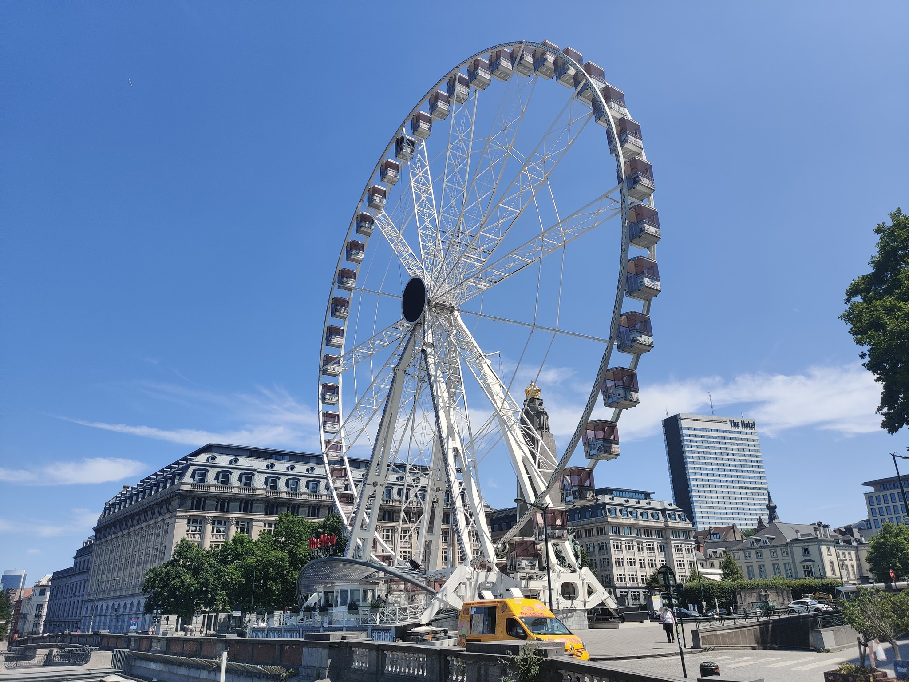
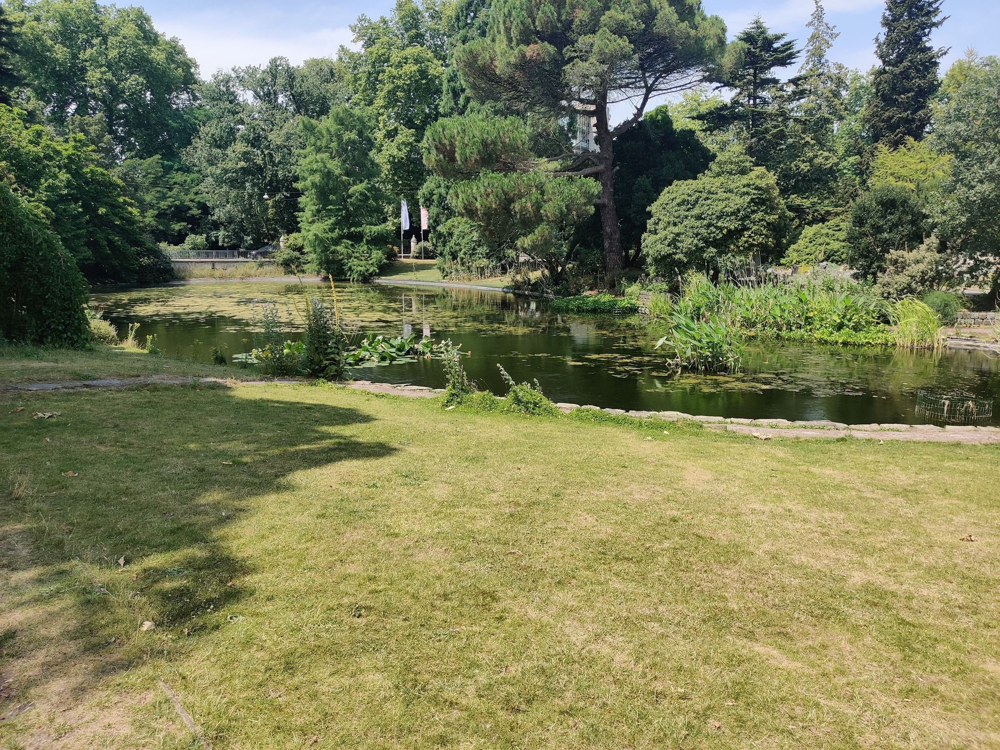

Belgia
Ma 30.6.2025 Brysseliin tutustuminen
 Tästä jatkuu se mihin edellisellä sivulla jäätiin. Saavuttuani Brysselin päärautatieasemalle jätin laukkuni aseman maksulliseen säilytyslokeroon ja lähdin tutustumaan Brysseliin. Kävelin maailmanpyörälle mistä näki hyvin kaupunkiin. Muistaakseni se teki neljäs kierrosta ennen kuin pääsin pois. Sisäänkirjautuminen seuraavien kolmen yön majapaikkaan alkoi klo 15:00. Tällä kertaa kyseessä hotelli ihan päärautatieaseman läheisyydessä nimeltä MEININGER Hotel Bruxelles Gare du Midi. Siisti ja moderni hotelli.
Sisäänkirjautumisen jälkeen kävin tutustumassa vielä lisää Brysseliin. Vaikka otinkin kuvia niin en muista että minkä nimisistä paikoista ne otin. Muistan kuitenkin uuden ruokakokemuksen. Päätin kokeilla paikallista herkkua eli Vohvelipurilaista. Erittäin hyvää mutta onnistuin sotkemaan paitani rasvalla. Päivällisen jälkeen lisää tutustumista paikkoihin. Huomionarvoista se että kävelin kaikkialle ja se kyllä tuntui jaloissa. Lopulta palasin takaisin hotellille valmistautumaan seuraavan päivän Antwerpenin päiväreissua varten.
Ti 1.7.2025 Antwerpen
 Kaverini Dylan lupasi tutustuttaa minut kotikaupunkiinsa Antwerpeniin
eli sinne menin. Nappasin rautatieasemalta aamupalaa ja astuin junaan.
Junamatka kesti noin 40 minuuttia. Dylan oli vastassa ja siitä
lähdettiin kiertämään kaupunkia. Käveltyä tuli paljon, kuvia otettua
vähän ja taaskin paikan nimet unohduksissa eli ei hirveästi kerrottavaa.
Muutamia juttuja muistan kyllä. Käytiin syömässä sellaisessa paikassa
missä kaikki ravintolat ja baarit olivat samassa tilassa ja kaikki ruoat
tilattiin samalla appilla vaikka tulivatkin eri ravintolosta. Söin ihan
hyvän hampurilaisen. Dylan myös tarjosi minulle pirtelön myöhemmin mikä
tuli kyllä tarpeeseen. Ulkolämpötila kun oli +37 astetta.
Kaverini Dylan lupasi tutustuttaa minut kotikaupunkiinsa Antwerpeniin
eli sinne menin. Nappasin rautatieasemalta aamupalaa ja astuin junaan.
Junamatka kesti noin 40 minuuttia. Dylan oli vastassa ja siitä
lähdettiin kiertämään kaupunkia. Käveltyä tuli paljon, kuvia otettua
vähän ja taaskin paikan nimet unohduksissa eli ei hirveästi kerrottavaa.
Muutamia juttuja muistan kyllä. Käytiin syömässä sellaisessa paikassa
missä kaikki ravintolat ja baarit olivat samassa tilassa ja kaikki ruoat
tilattiin samalla appilla vaikka tulivatkin eri ravintolosta. Söin ihan
hyvän hampurilaisen. Dylan myös tarjosi minulle pirtelön myöhemmin mikä
tuli kyllä tarpeeseen. Ulkolämpötila kun oli +37 astetta.
Loppupäivästä en muista juuri mitään. Palasin junalla Brysseliin, söin iltapalaa ja valmistauduin seuraavan päivän reissuun Gentiin.
Ke 2.7.2025 Gent ja Aalst
 Tämän päivän suunnitelmana oli tehdä päiväreissu Gentiin. Gent on ihan päinvastaisessa suunnassa Brysselistä kuin mitä Antwerpen on. Junalla kuitenkin pääsee yhtä helposti Gentiinkin. Jälleen kerran nappasin aamupalaa asemalta ja hyppäsin junaan. Junamatka kesti noin puoli tuntia. Paljon tuli taas käveltyä ja tässä kohtaa viimeistään huomasin että sandaalit eivät ole hyvät kävelykengät. Jalat ihan rakkuloilla ja vielä puolet reissusta jäljellä. Kuvien kanssa sama ongelma kuin aiemminkin. Niitä on otettu mutta ei ole mitään merkintää että mistä.
Kävin tänä päivänä myös toisella paikkakunnalla eli Aalstissa. Se on matkan varrella Gentistä Brysseliin. Päätin käydä siellä koska siellä on kortti- ja lautapeliliike nimeltä Hermelijn. Se on tuttu n. kolmen vuoden takaa kun kävin siellä turnauksessa. Muistan turnauksen lisäksi myös sen kuinka paljon majoneesia meikäläisen ranskalaisiin oli laitettu silloin. Kävin tosiaan kyseisessä liikkeessä ja ostinkin jopa jotain.
Lopulta palasin takaisin Brysseliin missä muistan syöneeni ainakin vohvelin suklaakastikkeella. Liian imelää jopa meikäläisen makuun. Loppuilta menikin sitten hotellilla pakkaillessa tavaroita seuraavan päivän lentoa varten. Budapestiin lähtö edessä.
To 3.7.2025 Lähtö Budapestiin
Reissun toinen lentopäivä kyseessä. Lento lähti Charleroin kentältä (se pienempi Brysselin kentistä) klo 10:15 eli suht aikaisin piti herätä. Charleroin kentälle ei ole junayhteyttä eli piti mennä taas Flibco-bussilla. En muista että turvatarkastuksessa olisi tälläkään kertaa ollut ongelmia. Lento Budapestiin kesti reilu kaksi tuntia. Tästä kohdasta eteenpäin seuraavalla sivulla.